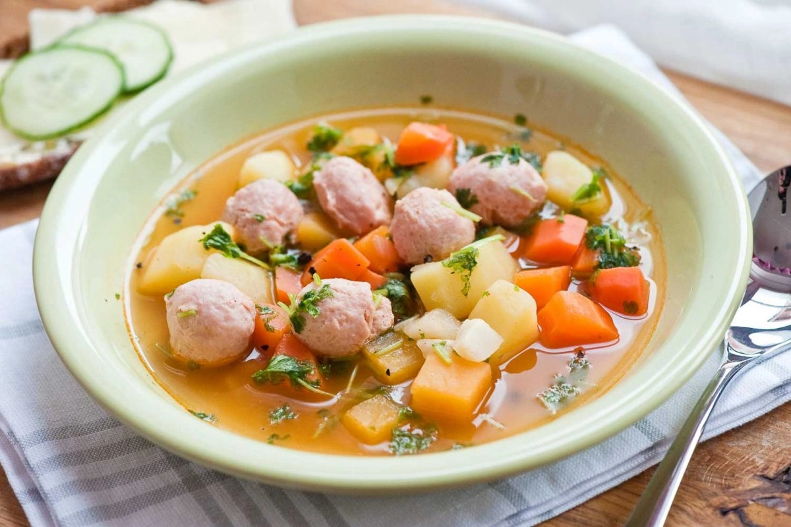

Siskonmakkarakeitto

Description
Siskonmakkara is a mild, Finnish fresh sausage made of pork, cooked before serving. The meat is soft and smooth-textured and usually squeezed from its casing when cooking. The most common dish using this sausage is siskonmakkara soup (siskonmakkarakeitto) in which they are cooked in and simultaneously flavour the soup stock.
Ingredients
- 1.5L water
- 1 bay leaf
- 2 beef or vegetable stock cubes
- 10 whole black peppercorns
- 200g parsnips
- 200g carrots
- 6 - 7 potatoes
- 500g siskonmakkara
- Fresh parsely for garnish
Steps
- Pour water into a pot and heat to a low boil.
- Add bay leaf, peppercorns and stock cubes.
- Peel and chop the vegetables into roughly even pieces then add all but the potatoes to the boiling stock. Wait a minutes before adding the potatoes.
- Boil until the vegetables are cooked.
- Squeeze out even sized pieces of siskonmakkara into the boiling soup, let them cook for a few minutes.
- Sprinkle in chopped parsely.
Home
Back to Top